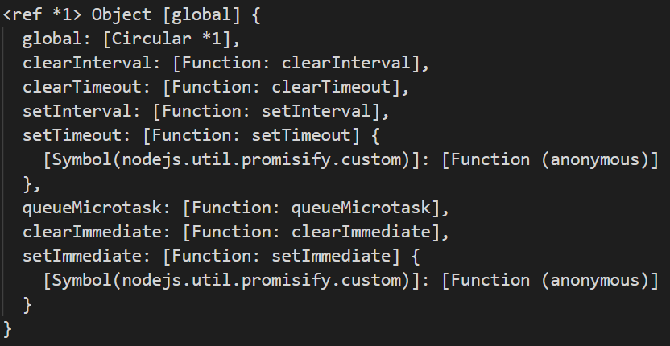

日常的学习笔记，包括 ES6、Promise、Node.js、Webpack、http 原理、Vue全家桶，后续可能还会继续更新 Typescript、Vue3 和 常见的面试题 等等。
Node中的全局对象
参考官网 Node.js官网
首先我们先要清楚一个概念。一个默认执行的js文件，使用node来执行他会把这个文件当成一个模块来执行。
1 | console.log(this); // {} |
this是一个空对象，模块会默认将this给进行修改。
在前端（html）中，访问变量是通过window属性。而在后端（node）中，访问变量是通过global属性。
1 | // 在node环境下运行 |
我们可以在控制台中，查看打印出来的结果。

其中有很多我们经常用到的方法，例如setTimeout、clearTimeout、setInterval、clearInterval、setImmediate、clearImmediate等等。
（我们可以使用 console.dir(this, {showHidden: true}) 查看隐藏属性，更全面的观察global。）
Buffer
JavaScript 语言自身只有字符串数据类型，没有二进制数据类型。
但在处理像TCP流或文件流时，必须使用到二进制数据。因此在 Node.js中，定义了一个 Buffer 类，该类用来创建一个专门存放二进制数据的缓存区。
（后期会有博客对此进行详细说明）
__dirname / __filename
- __dirname ：表示当前文件执行时的 固定目录 ，也就是目录的绝对路径。
- __filename ：表示当前文件自己执行位置的 绝对路径。
使用 __dirname 和 __filename 的路径，是准确的绝对路径。
process
参考官网 process
1 | console.log(process); |
platform
表示当前运行的平台（win、mac 等等）
1 | console.log(process.platform); // win32 |
win32表示我当前运行的平台是 windows，而 mac的输出结果是 darwin。
我们可以根据其输出结果的不同，做不同的命令配置。
chdir
change directory，修改当前文件运行目录。
1 | // 修改前文件位置 d:\****\****\test\demo |
此方法我们很少会应用到。
cwd
current working directory的缩写，表示当前工作目录。
1 | console.log(process.cwd()); // d:\****\****\test\demo |
当前文件运行在哪个目录中，他就会显示哪个目录。
假设我们换一下运行此文件的目录（如在上级目录运行此文件），那结果就会显示运行文件的位置。
1 | console.log(process.cwd()); // d:\****\****\test |
在webpack中，webpack会使用此方法自动查找并运行目录下的webpack.config.js文件。
env
表示当前的环境变量，而环境变量分为 用户变量 和 系统变量 。
在实际场景中，我们可以通过此变量来判断当前的运行环境（生产环境、开发环境 和 测试环境 等等）
1 | if (process.env.NODE_ENV === "dev") { |
（因目前Node各版本设置process.env的差异，在此不做配置环境变量的演示了，配置方法以 process.env官网 为准）
argv
表示启动时传入的命令行参数。
1 | console.log(process.argv); |
其中返回了一个数组，第一个属性表示 执行node所在的.exe文件 ，第二个属性表示 当前执行的文件 。
在实际场景中，我们可能会在命令行中输入其他需要传入的指令。
比如要启动一个server程序，我们就需要拟定一个端口号--port 3000。我们再使用上面的变量，输出的结果就会多出来 --port 和 3000。这样我们就可以对用户传递的参数进行解析，从而生成对应的功能。
（我们也可以使用 *commander** 来解析我们想要的参数。后续文章中，我们也会使用此插件，开发一套cli脚手架。*）
nextTick
表示延迟加载，他和setImmediate()都属于延迟加载。但是setImmediate是将任务放到队列前面，而nextTick是将任务放到队列末尾。
下一篇文章我会细讲一下nextTick。
本篇文章由莫小尚创作，文章中如有任何问题和纰漏，欢迎您的指正与交流。
您也可以关注我的 个人站点、博客园 和 掘金，我会在文章产出后同步上传到这些平台上。
最后感谢您的支持！